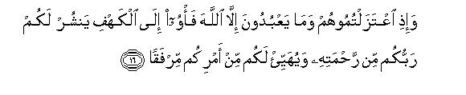
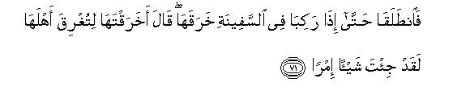

بسم الله الرحمن الرحيم
Sayyid Abul Ala Maududi - Tafhim al-Qur'an - The Meaning of the Qur'an
 18.
Surah Al Kahf (The Cave)
18.
Surah Al Kahf (The Cave)
This Surah takes its name from v. 9 in which the word (al-kahf) occurs.
This is the first of those Surahs which were sent down in the third stage of Prophethood at Makkah. We have already divided the life of the Holy Prophet at Makkah into four stages in the Introduction to Chapter VI. According to that division the third stage lasted from the fifth to the tenth year of Prophethood. What distinguishes this stage from the second and the fourth stages is this. During the second stage the Quraish mainly resorted to ridiculing, scoffing, threatening, tempting, raising objections and making false propaganda against the Holy Prophet and his followers in order to suppress the Islamic Movement. But during the third stage they employed the weapons of persecution, man handling and economic pressure for the same purpose. So much so that a large number of the Muslims had to emigrate from Arabia to Habash, and those who remained behind were besieged in Shi'ib Abi Talib along with the Holy Prophet and his family. To add to their misery, a complete social and economic boycott was applied against them. The only redeeming feature was that there were two personalities, Abu Talib and Hadrat Khadijah, whose personal influence had been conducive to the support of two great families of the Quraish. However, when in the tenth year of Prophethood these two persons died, the fourth stage began with such revere persecutions as forced the Holy Prophet and all his Companions to emigrate from Makkah.
It appears from the theme of the Surah that it was revealed at the beginning of the third stage when in spite of persecutions and opposition, migration to Habash had not yet taken place. That is why the story of "Ashab-i-Kahf" (the Sleepers of the Cave) has been related to comfort and encourage the persecuted Muslims and to show them how the righteous people have been saving their Faith in the past.
This Surah was sent down in answer to the three questions which the mushriks of Makkah, in consultation with the people of the Book, had put to the Holy Prophet in order to test him. These were: (1) Who were "the Sleepers of' the Cave"? (2) What is the real story of Khidr? and (3) What do you know about Zul-Qarnain? As these three questions and the stories involved concerned the history of the Christians and the Jews, and were unknown in Hijaz, a choice of these was made to test whether the Holy Prophet possessed any source of the knowledge of the hidden and unseen things. Allah, however, not only gave a complete answer to their questions but also employed the three stories to the disadvantage of the opponents of Islam in the conflict that was going on at that time at Makkah between Islam and un-belief:
The questioners were told that "the Sleepers of the Cave" believed in the same doctrine of Tauhid which was being put forward in the Quran and that their condition was similar to the condition of the persecuted Muslims of Makkah. On the other hand, the persecutors of the Sleepers of the Cave had behaved in the same way towards them as the disbelievers of the Quraish were behaving towards the Muslims. Besides this, the Muslims have been taught that even if a Believer is persecuted by a cruel society, he should not bow down before falsehood but emigrate from the place all alone, if need be, with trust in God. Incidentally the disbelievers of Makkah were told that the story of the Sleepers of the Cave was a clear proof of the creed of the Hereafter, for this showed that Allah has the power to resurrect anyone He wills even after a long sleep of death as He did in case of the Sleepers of the Cave.
The story of the Sleepers of the Cave has also been used to warn the chiefs of Makkah who were persecuting the small newly formed Muslim Community. At the same time, the Holy Prophet has been instructed that he should in no case make a compromise with their persecutors nor should he consider them to be more important than his poor followers. On the other hand, those chiefs have been admonished that they should not be puffed up with the transitory life of pleasure they were then enjoying but should seek after those excellences which are permanent and eternal.
The story of Khidr and Moses has been related in such a way as to supply the answer to the question of the disbelievers and to give comfort to the Believers as well. The lesson contained in this story is this "You should have full faith in the wisdom of what is happening in the Divine Factory in accordance with the will of Allah. As the reality is hidden from you, you are at a loss to understand the wisdom of what is happening, and sometimes if it appears that things are going against you, you cry out, 'How and why has this happened'. The fact is that if the curtain be removed from the "unseen", you would yourselves come to know that what is happening here is for the best. Even if some times it appears that something is going against you, you will see that in the end it also produces some good results for you.
The same is true of the story of Zul-Qarnain for it also admonishes the questioners, as if to say, "0 you vain chiefs of Makkah you should learn a lesson from Zul-Qarnain. Though he was a great ruler, a great conqueror and the owner of great resources, yet he always surrendered to his Creator, whereas you are rebelling against Him even though you are insignificant chieftains in comparison with him. Besides this, though Zul-Qarnain built one of the strongest walls for protection, yet his real trust was in Allah and not in the "wall". He believed that the wall could protect him against his enemies as long as it was the will of Allah and that there would be crack and holes in it, when it would be His will : whereas you who possess only insignificant fortified abodes and dwellings in comparison with him, consider yourselves to be permanently safe and secure against all sorts of calamities."
While the Quran turned the tables on the questioners who had tried to "expose" the Holy Prophet, in the end of the Surah the same things have been reiterated that were stated at its beginning: "Tauhid and the Hereafter are absolutely true and real and for your own good you should accept these doctrines, mend your ways in accordance with them and live in this world with this conviction that you are accountable to Allah: otherwise you shall ruin your life and all your doings shall be set at naught."

In the name of Allah, the Compassionate, the Merciful.

[1-4] All praise is for Allah, Who has sent down this Book to His Servant, and assigned nothing crooked to it. 1 This Book says everything directly so that he may warn the people of the severe chastisement of Allah and give good news to the Believers, who do righteous deeds, that they will have an excellent recompense, which they will always enjoy and that he should warn those people who say, “Allah has begotten a son.”2
[5] Neither had they any knowledge of this3 nor their forefathers; it is a monstrous word that comes out of their mouths: they utter a sheer lie.
[6-8] Well, O Muhammad, it may be that you will consume your life for their sake out of sorrow, if they do not believe in this message.4 The fact is that whatsoever is on the earth, We have made it as its adornment so that we may test the people as to which of them does best deeds. In the end, We will turn all that is in it into a bare plain.5
[9-12] Do you consider “the Sleepers of the Cave,”6 and the bearers of the “Inscription”7 to be among Our strange Signs?8 When those few young men took refuge in the Cave, they said, "Our Lord! have a special mercy on us from Thyself and guide us out of our ordeal aright." Accordingly We lulled them to a deep sleep in the Cave for a number of years. Then We raised them up in order to test which of them were able to calculate correctly the period of their stay there.

[13-16] Now We tell you their real story.9 They were a few young men who believed in their Lords, and We increased them in their guidance.10 We strengthened their hearts, when they rose up, and they declared, “Our Lord is the One Who is the Lord of the heavens and the earth. We will not invoke any other deity than Him. It will be the most improper thing if we do so.” (Then they held mutual consultations, saying,) “These people of ours have given up the Lord of the universe and adopted other deities. Why do they not bring forward any clear argument in support of their creed? Well, who can be more wicked than the one who forges a lie against Allah? Now that you have forsaken them and discarded the deities they worship besides Allah, let us go to such and such a cave for refuge.11 Your Lord will extend to you His mercy, and order your affairs for you for the best.”
[17-18] If you had looked at them in the Cave,12 it would have appeared to you that when the sun rose, it left the Cave to one side and inclined towards the right, and when it set, it turned away from them and went to the left while they lay in the spacious place inside the Cave.13 This was one of the Signs of Allah. Whomsoever Allah guides aright, he is guided aright, and whomsoever Allah lets go astray, you will find no guardian to direct him. If you had seen them, it would have appeared to you as if they were awake, whereas in fact they were asleep. We turned them about to the right and the left sides.14 And their dog was sitting at the entrance of the Cave with outstretched forelegs. If you had looked at them, you would have turned on your heels and their sight would have struck you with terror.15
[19-21] And in the same miraculous way We raised them up again16 so that they may ask one another (about their wonderful experience). One of them asked, “Well, how long have you remained in this condition?” The others answered, “May-be, we have remained so for a day or a part of a day.” Then they declared, “Your Lord knows best how long we have remained in this condition. So let us send one of us with this silver coin to the city, and he should look for a place wherein he can get the best food so that he may bring something to eat. He should, however, conduct himself with caution lest anyone should discover our whereabouts; for if they succeed in over-powering us, they will surely stone us to death or force us back into their Faith, and in that case we will never be able to obtain true success.” In this way We revealed their secret to the people of the city17 so that they should know that Allah's promise is true and that there is no doubt about (the coming of) the Hour of Resurrection.18 (But it is a pity that instead of considering this aspect of the matter) they were at that time disputing among themselves with regard to them (the Sleepers of the Cave). Some of them said, “Let us build a wall against them, for then Lord alone knows best about them”19 But those people who prevailed in their matter,20 said, "We will build a place of worship as a memorial for them"21
[22-26] Some people will say, “They were three and the fourth was their dog,” and some others will say, “They were five and the sixth was their dog.” These are mere irrelevant guesses. There are still others who say, “They were seven and the eighth was their dog.”22 Say, "My Lord alone knows best how many they were." "There are a few people only who know their correct number: so you should not enter into discussions with them about their number except in a cursory way: nor ask anyone about them23 and never say about any matter, “I will do this tomorrow (for you cannot do anything) except that Allah wills it.” If ever you inadvertently utter anything like this, you should at once remember your Lord and say, “I hope that my Lord will guide me24 in this matter with that thing which is nearest to the right way for me”and some people say that they remained in their Cave for three hundred years and some others add nine more years25 (to the reckoning of the period). O Prophet, say, “Allah knows best about the period of their stay there, for He is fully aware of all that is hidden in the heavens and the earth.” What an excellent Seer and Hearer He is! There is no other guardian of the creation in the heavens and the earth, and He does not associate anyone with Himself in His authority.
[27-28] O Prophet,26 recite (the very same) that has been revealed to you in the Book of your Lord, for no one is authorized to make any change whatsoever in the Word of your Lord and (if you will make any change to please any one) you will find no place of refuge to protect you from Him.27 And keep yourself whole-heartedly content with those who pray to their Lord morning and evening in order to win His approval, and do not turn your attention away from them. Do you desire the allurements of the world?28 Do not follow the one"29 whose heart We have made neglectful of Our remembrance and who follows his own lust and goes to extremes in the conduct of his affairs.30
[29-31] Proclaim, “This is the Truth from your Lord: now whosoever will, he may accept it and whosoever will, he may reject it.”31 (As for those who reject this,) We have prepared for such workers of iniquity a fire whose flames have encircled them.32 If they will ask for water there, they will be treated with such a drink as will have its residue like that of oil33 and burn their lips: what an evil drink and what an evil abode! As regards those, who accept it and do righteous deeds, they should rest assured that We do not let go waste the reward of such people: they will have evergreen gardens with canals flowing beneath them: they will be adorned with bracelets34 of gold and will wear green colored robes of silk and rich brocade and will be reclining upon raised thrones.35 What an excellent reward and what an excellent abode!
[32-36] O Muhammad, present a parable36 before them. There were two persons; to one of those We gave two gardens of vine and surrounded them with a fence of date-palm trees and We kept a piece of land between them for cultivation. Both of the vine-yards yielded abundant fruit and did not fail anywise in bringing forth their produce, and We caused a canal to flow in their midst. And the owner of the gardens got much benefit. In spite of all this, while conversing with his neighbor, he said, “I have more of wealth than you and have mightier men at my service.” Then he entered his “Paradise,”37 while he was unjust to himself, and said, “I don't think that this wealth of mine will ever perish, and I do not believe that the Hour of Resurrection will ever come. Anyhow if ever I am returned to my Lord, I will get even a grander place than this.”38


[37-44] His neighbor rebuked him during the conversation, saying, "What! Do you disbelieve in the Being Who has created you from clay, then from sperm drop and shaped you as a perfect man?39 As for myself; Allah alone is my Lord and I set up no partners with Him. And when you were entering your garden, why didn't you say, `Only that shall happen what He will: neither I nor any one else has any power.40 If you find me now less in wealth and offspring than you, my Lord may bestow on me a better garden than yours and send from heaven on your garden a catastrophe that might turn it into a barren plain, or its water might sink into the earth and you may not be able to bring it out in any way." At last (it so happened that) all his fruit produce was destroyed and, seeing his vines overturned on the trellises, he began to wring his hands at the loss of what he had spent on it, saying, "I wish I had not associated a partner with my Lord! "He was so helpless that neither could he find any host to help him against Allah, nor was himself able to avert that catastrophe-It was then that he realized that all the power of helping rests with Allah, the True One. That reward is the best Which He bestows and that end is the-best to which He leads.

[45-49] And O Prophet, bring home to them the reality of this worldly life by a parable. It is like the vegetation of the earth that flourished luxuriantly when We sent down rain water from the sky, but afterwards the same vegetation was turned into chaff, which is blown away by the wind: Allah has power over everything.41 Likewise this wealth and the offspring are mere transitory adornment of worldly life: in fact the abiding good deeds are best in the sight of your Lord in regard to their end, and hold out for you greater hopes. The only thing, for which you should prepare, is the Day when We will set the mountains in motion,42 and when you will find the Earth quite naked,43 and We will muster together all human beings in a way as to leave none at all behind,44 and all shall be presented before your Lord in rows-Well! you may see that you have come before Us in the same condition in which We created you at first:45 You were under the delusion that We had not fixed any time of appointment with you-Then the record of deeds shall be set before them. At that time you will see that the criminals will be afraid of the record of their book of life and will say, "Woe to us! What sort of a book this is! It has left nothing unrecorded of our doings, small or great." They will see before them everything, whatsoever they had done, and your Lord will not be unjust to anyone in the least.46
[50] Remember! When We said to the angels, "Bow down before Adam". They bowed down but Iblis did not.47 He was one of the jinns, so he chose the way of disobedience to his Lord's Command.48 What, would you then discard Me and make him and his offspring your patrons, though they are your enemies? What a bad substitute it is that these workers of iniquity are taking!

[51] I did not call them to witness the creation of the heavens and the earth nor did I associate them in their own creation.49 It is not for Me to make My supporters those who lead others astray.
[52-53] What they will do on the Day when their Lord will say to them: “Now call all those whom you considered to be My partners.”50 They will call them but they will not respond and come to their help, and We will set a gulf of perdition common between them.51 All the criminals will see the Fire on that Day and will have a foreboding that they are going to fall into it, but will not find any place of escape.
[54-55] We have devised different ways in the Qur'an to make the people understand its Message, but man is by nature very contentious. (The question is) what kept them back from accepting guidance when it came before them and from asking the forgiveness of their Lord? It is nothing more than this that they are waiting for the same thing to happen to them that visited the former communities; or that they should see the scourge of Allah coming before them!52
[56] The only mission for which We send the Messengers is to convey good news and stern warning,53 but the disbelievers employ weapons of falsehood to defeat the Truth, and they hold up to ridicule My servants and the warnings that have been sent to them.
[57] Now, who can be more unjust than the person before whom his Lord's Revelations are recited to admonish him, and he turns away from them and forgets the evil end to which he has paved the way with his own hands? As regards those people, who have adopted such an attitude, We have put coverings over their hearts which do not let them listen to the Qur'an, and We have produced heaviness in their ears. While in this state, they will never be guided aright howsoever you may invite them to the Guidance.54
[58] Your Lord is very Forgiving and very Merciful: Had He willed to seize them for their evil deeds, He would have sent immediately a scourge on them but He has appointed a time for its fulfillment, and they will find no way out to escape from it.55
[59] These habitations which were stricken with the scourge are before you:56 when they committed iniquity We annihilated them, and We had appointed a term for their annihilation.
[60-65] (Now relate to them the event regarding Moses,) when Moses said to his attendant, “I will not bring my journey to an end until I reach the confluence of the two rivers: otherwise I will continue my journey for years.”57 And it so happened that when they reached the confluence, they became neglectful of their fish and it burrowed its way to the river as through a tunnel. When they had passed on further, Moses said to his attendant, “Let us have our breakfast, for we are dead tired because of to-day's journey.” The attendant said, “Did you not notice what a strange thing happened when we were taking rest by the side of that rock? I totally forgot about the fish and satan made me so neglectful of it that I could not mention it to you: the fish slipped into the river in a marvelous manner.” Moses replied, “That is exactly what we were seeking.”58 Accordingly, they both went back, retracing their footsteps, and there they found one of our servants whom We had blessed with special favor and had given him a special knowledge from Ourselves.59
[66-70] Moses said to him, “May I accompany you, so that you may teach me also that Wisdom, which has been taught to you?” He answered, “You cannot bear with me, and you cannot have the patience with regard to that matter of which you have no knowledge.” Moses said, “If Allah wills, you will find me patient and I will not disobey you in any matter.” He said, “Well, if you want to accompany me, you should ask me no questions about anything until I myself mention it to you.”

[71-73] So they proceeded on until they boarded a boat, and that person bored a hole in the boat. Moses cried out, “What! have you bored a hole in it so that all the passengers may be drowned? This is a grievous thing that you have done.” He answered, “Didn't I tell you that you would not be able to bear with me patiently?” Moses replied, “Please do not rebuke me for my forgetfulness, and do not take me to task in regard to my conduct.”
[74] Then they journeyed on until they met a boy and that person slew him. Moses cried out, “Have you killed an innocent person, though he had killed nobody? Surely this is a horrible deed that you have committed.”
[75-76] He answered, “Didn't I tell you that you would not be able to bear with me patiently?” Moses said, “If after this, I ask anything of you, you may not let me accompany you. Well, now I have afforded you with an excuse from myself.”

[77-82] Then they traveled on until they reached a certain habitation and requested its inhabitants to give them some food but they declined to entertain them. There they saw a wall which was about to fall down. That person set it up again. Moses said, “Had you wanted, you could have demanded payment for your labor.” The other said, "That will do: we must now part company. Now I explain those things about which you could not keep patience. As regards the boat, it belonged to a few poor persons who toiled on the river. I intended to damage it because further on there was the territory of a king who forcibly seized every boat. As for the boy, his parents were true Believers and we feared lest he should trouble them with his rebellion and unbelief. Therefore we, wished that in his stead their Lord may grant them another child who may be more righteous and filial. As regards the wall, it belonged to two orphan boys, who reside in this city. A treasure for them lies buried under this wall. As their father was a righteous man, your Lord willed that when these children attain their maturity, they should dig out their treasure. All this has been done as a mercy from your Lord: I have not done anything of my own authority. This is the interpretation of those things about which you could not keep patience.60
[83] And O Muhammad, they ask you about Zul-Qarnain:61 tell them, “I am going to recite to you an account of him.”62
[84-88] We had established his power on the Earth and had provided him with every kind of ways and means. At first, he made preparations for an expedition (to the West and marched on) till he reached the limit where the sun set,63 and found it setting in black waters,64 and there he saw a people. We said to him, “O Zul-Qarnain! You have the power to punish them and also the option to treat them generously.”65 He said, “We will punish that one of them who will commit iniquity: then he shall be returned to his Lord and He will inflict on him a grievous torment: And as for the one, who will believe and do righteous deeds, there is a generous recompense and We will prescribe for him easy tasks.”
[89-91] Then he made preparations (for another expedition and marched on) till he reached the limit where the sun rose. There he saw the sun rising on a people, whom We had not given any shelter from sun shine.66 This was their condition and We know well whatever Zul-Qarnain possessed.

[92-98] Then he made preparations (for another expedition and marched on) till he reached between two mountains,67 where he found a people who could hardly understand any language.68 They said, “O Zul-Qarnain, Gog and Magog69 spread chaos in this land; should we then pay a tribute to you so that you may build a bulwark between us and them” He said, “What my Allah has granted me is more than enough. You should help me only with manual labor and I will build a barrier between you and them.70 Come, bring sheets of iron for me. "When he had filled the space between the two mountains, he said to the people, “Now, ply your bellows.” They did so till that (iron-wall) became red-hot and he said, “Now let me pour molten brass upon it.” This was such a barrier that Gog and Magog could not scale over it, nor were they able to dig through it. Zul-Qarnain said, “This is a mercy from my Lord; but when the time of my Lord's promise shall come, He will level it to dust71 and the promise of my Lord is true.”72

[99-101] And on that Day,73 We will let loose the people to come close together tumultuously (like the waves of an ocean), and the trumpet shall be blown, and We will gather together all mankind. On that Day Hell shall be brought before the unbelievers who had become blind to My admonition and turned a deaf ear to it.
[102] What,74 do these people, who have disbelieved, presume that they would make My servants their helpers beside Me?75 We have prepared Hell for the hospitality of such people.

[103-108] O Muhammad, say to them, "Should We tell you who are the most unsuccessful people and miserable failures in regard to their deeds? They are those, whose endeavors, in the worldly life, had all gone astray from the Right Way76 but all along they were under the delusion that everything they were doing, was rightly directed: those are the people who rejected the Signs of their Lord and did not believe that they would ever go before Him. Therefore all their deeds were lost, for We will assign no weight to them on the Day of Resurrection.77 Their recompense is Hell for the disbelief they showed and for the mockery they adopted in regard to My Signs and My Messengers. However, for the hospitality of those people who did righteous deeds, there will be gardens of Paradise wherein they will abide for ever and they will never desire to go anywhere out of them.78
[109] O Muhammad, say to them, "If the waters of the ocean were to become ink to write the Words79 of my Lord, it would exhaust but the Words of my Lord will not exhaust: nay, even if We brought as much ink again, it will not suffice for that.”
[110] O Muhammad say to them, “I am a human being like you: it has been revealed to me that your Deity is only One Allah. Therefore the one who expects to meet his Lord, should not associate with Him any other deity in His worship.”
1That is, "There is nothing intricate or complicated in it that may be beyond anyone's understanding nor is there anything that deviates from the straight path of the Truth and thus cause hesitation in the mind of a truth-loving person."
2"Those people" includes the Christians, the Jews and the mushrik Arabs who assigned offspring to Allah.
3_____
4This refers to the real cause of the anxiety of the Holy Prophet at the time of the revelation of this Surah . It clearly shows that the Holy Prophet did not grieve at the persecution from which he and his Companions were suffering but at the deviation and moral degeneration of his people. What was consuming him was that, though he was trying to bring them out from their disgraceful state, they persisted in it. He was grieved because he was convinced that their deviation would inevitably lead them to destruction and scourge of Allah. Therefore he was working day and night to save them but it appeared that they were bent upon incurring the chastisement of Allah. The Holy Prophet himself has described this state of his mind in a Tradition to this effect: "I may describe this thing in a parable. A person kindled a fire to spread light but the moths persist in falling over it to burn themselves alive. He vies to save them from the fire but the moths reduce his efforts to failure. The same is true of me and you. I hold you by your skirts to keep you away from the fire, but you are bent upon falling into it." (Bukhari, Muslim).
Though apparently it is merely stated "...... it may be that you will consume your life for their sake out of sorrow...." it also contains a sort of consolation for the Holy Prophet, as if to say, "As you are not responsible for forcing them to believe, why should you consume yourself for their sake? Your only duty is to give good news and warning and not to turn people into Believers. Therefore you may go on carrying out your mission of giving good news to the Believers and warning of the bad consequences to the disbelievers."
5V. 6 was addressed to the Holy Prophet, but vv. 7-8 have been directed to the disbelievers indirectly, as if to say, "You must understand it clearly that all the things that you see in the world and which allure you, are a transitory adornment which has been arranged merely to test you, but it is a pity that you have been involved in the misunderstanding that all these things have been created to cater for your pleasure and enjoyment. That is why the only aim and object of life you have set before you is: "Eat, drink and be merry.." As a result of this you do not pay any attention to your true and real well-wisher. You must understand it well that these things have not been provided for pleasure but are actually a means of testing you. You have been placed among them to see which of you is allured by these from the real aim of life and which of you keeps steadfast in the worship of Allah, for which you have been sent to the world. All these things and means of pleasure shall come to an end on the Day your examination is over and nothing will remain on the earth because it will be turned into a bare plain."
6The Arabic word (Kahaf) literally means a vast cave.
7There is a difference of opinion about the meaning of ar-raqim. Some Companions and their followers opined that it was the name of that habitation where this event took place and that it was situated somewhere between Aylah and Palestine. There are other commentators who take it to mean the "Inscription" that had been set up at the Cave as a memorial to "the Sleepers of the Cave". Maulana Abul Kalam Azad, in his commentary, Tarjmanul-Qur'an, has preferred the first meaning and opined that it is the same place which has been called Rekem in the Bible (Joshua, 18: 27). Then he identifies it with the ancient historical city of Petra. But he has not considered the fact that Rekem, as mentioned in the Bible, belonged to the children of Benjamin and according to the Book of Joshua, the territory of this clan was situated to the west of river Jordan and the Dead Sea and that the ruins of Petra are situated to the south of Jordan. That is why the modern archaeologists do not believe that Petra and Rekem are one and the same place. (Please refer to Encyclopedia Britannica, 1946, Vol XVII, page 658). We are also of the opinion that by "Ar-raqim"is meant "the inscription.”
8This question has been posed to expose the skeptical attitude of the disbelievers towards the “Sleepers of the Cave,” as if to say, “Do you think that Allah, Who has created the heavens and the earth, does not have the power to keep a few persons in a state of sleep for a couple of hundred years and then to raise them up as hale and hearty as they were at the time of going to sleep? If you ever had pondered over the wonderful creation of the sun and the moon and the earth, you would never have expressed any doubt that such a thing was anything difficult for Allah.”
9The oldest evidence of this story is found in a homily written in Syriac by Jacob of Sarug, a Christian priest of Syria, who was born in A.D. 452, a few years after the death of "the Companions of the Cave." The homily which describes the legend in great detail was composed by him in or about A.D. 474. On the one hand, this same Syriac version came into the hands of our early commentators, and Ibn Jarir Tabari cited it in his commentary with various authorities, and on the other, it reached Europe where its translations and abridged versions were published in Greek and Latin. The abridged story as told by Gibbon in Chapter 33 of his The Decline and Fall of the Roman Empire under the heading, "The Seven Sleepers", so closely resembles the story told by our commentators that both the versions seem to have been drawn from the same source. For instance, the name of the king, whose persecutions made the Seven Christian youths of Ephesus take refuge in the cave, was Emperor Decius according to Gibbon. He ruled the Roman Empire from A.D. 249 to 251 and whose reign is very notorious because of his persecution of the followers of Prophet Jesus Christ, while our commentators call him `Decanus', `Decaus', etc. The city, where this event happened, was `Aphesus', or `Aphesos' according to our commentators, while according to Gibbon it was Ephesus, which was the biggest Roman city and sea-port on the west coast of Asia Minor. The ruins of this city can still be seen 20 to 25 miles south of the modern Turkish city of Izmir. (Please see Map No. 1 for reference). Again the name of the king, during whose reign "the Companions of the Cave" awoke was `Tezusius' according to the Muslim commentators and Theodosius II according to Gibbon. He ruled over Rome from A.D. 408 to 450, after the Roman Empire had accepted Christianity.
The resemblance between the two versions is so close that even the name of the companion whom the Sleepers sent to the city to buy food after waking up has been mentioned as `Jamblicha' by the Muslim scholars and Jamblichus by Gibbon. The details of the story in both the versions are also similar which are briefly as follows:
When during the reign of the Emperor Decius the followers of Prophet Jesus Christ were being mercilessly persecuted, the Seven Christian youths hid themselves in a cave and fell into a sleep. Then in the 38th year of the reign of the Emperor Theodosius II (approximately in A.D. 445 or 446) they awoke when the whole of the Roman Empire had become Christian. Thus, they slept in the cave for nearly 196 years.
On this ground some orientalists have rejected that the above-mentioned story is the same as that given in the Qur'an because the period of their stay in the cave according to the Qur'an (v. 25) was 309 years. We have, however, answered this objection in E.N. 25.
There are a few minor differences between the Quranic and Syriac versions, on the basis of which Gibbon has charged the Holy Prophet with "ignorance". However, the Syriac version, on the basis of whose authenticity he has committed this gross insolence, was even according to him written thirty to forty years after the event by a Syrian. He has not taken the trouble to consider the fact that verbal versions of events do change a bit during such a long time while they are communicated from one country to the other. Therefore it is wrong to take such a version of the story for granted and literally true and to charge the Qur'an with discrepancy for any main difference with it. Such an attitude is worthy only .of those people who are so blinded by religious prejudices that they discard even the most ordinary demands of reason.
The city of Ephesus where the event of the Sleepers of the Cave took place, was built about 11th century B.C. and became a great center of idol worship, its chief deity being the moon goddess, Diana, whose temple was regarded as a wonder of the ancient world. Most of her devotees belonged to Asia Minor and the Roman Empire also had accepted her as one of its deities.
After Prophet Jesus when his message started reaching different parts of the Roman Empire, a few youths of Ephesus also gave up idol worship and accepted God as their only Lord. Gregory of Tours has collected details about these Christian youths in his Meraculorum Liber, which are briefly as follows:
"They were seven youths. When the Emperor Decius heard of their change of faith, he summoned them and questioned them about their new religion. ht spite of knowing that the Emperor was deadly against the followers of Christ, they frankly admitted before him that their Lord is the Lord of the earth and heavens, and that they recognized none else as Deity for if they did so, they would be committing a grave sin. The Emperor became furious to hear this, and warned that he would have them killed, but then considering their tender age, he granted them three days in which they were counseled to revert to their old faith, otherwise they would be put to death.
"The seven youths took advantage of the situation and fled the city to conceal themselves in a cave in the mountains. On the way a dog also followed them: they did their best to scare it away, but it would not leave them. At last they found a spacious cave as a suitable refuge and hid in it, and the dog sat at the entrance. Being tired they soon fell into a deep slumber. This happened in about 250 A.D. After about 197 years, in 447 A.D., during the reign of Emperor Theodosius II, they awoke suddenly when the whole Roman Empire had embraced Christianity and the Ephesians had given up idolatry.
"At this time a fierce controversy was going on among the Romans regarding the reality of the life-after-death and Resurrection, and the Emperor himself was anxious to eradicate somehow the disbelief in the life-after-death from the minds of his people. So much so that one day he prayed that God in His mercy may show a sign which tray help restore and correct the people's belief. In precisely the same days the Seven Sleepers awoke in the cave.
"After waking up the youths started asking one another about how long they might have slept. Some said it might have been a day: others said it was a part of a day. When they reached no conclusion, they stopped arguing, leaving the knowledge of the exact period to God.
Then they sent Jean, a companion, to the city with a few silver coins to buy food, and warned him to be on his guard lest the people should recognize him, for they feared that if they were discovered the Ephesians would force them to bow before Diana. But when Jean came to the city he was astonished to see that the world had changed: the whole population had embraced Christianity, and there was nobody in the city to worship Diana. He came to a shop and wanted to buy a few loaves of bread. When he paid in a coin bearing the image of Emperor Decius, the shopkeeper could not believe his eyes and asked the stranger from where he had obtained that coin. When the young man said that it was his own, a dispute began between them and soon a crowd gathered around them, and the matter reached the chief officer of the city. The officer himself was puzzled and wanted to know the whereabouts of the treasure-house from where the young man had taken the coin, but the latter insisted that it belonged to him. The officer did not believe him because he thought that a young man like him could not possibly possess a centuries-old coin which had not even been seen by the elders in the city. When Jean came to know that the Emperor Decius had died., he was pleasantly surprised. He told the crowd that he and his six companions had fled the city only the other day and taken refuge in a cave to escape Decius' persecution. The officer was greatly surprised and followed the young man to see the cave where his companions lay in hiding. And a great crowd followed behind them. When they came to the cave, it was fully established that the youths really belonged to the Emperor Decius' period. Consequently, Emperor Theodosius was informed and he also visited the cave to receive grace. Then the seven youths went back into the cave and lay down and breathed their last. Seeing this clear sign the people's belief in the life-after-death was restored, and a monument was ordered to be built over the cave by the Emperor."
The story of the Sleepers of the Cave as narrated above, corresponds so closely with that mentioned in the Qur'an that the seven youths can easily be regarded as "Ashab-i-Kahf" (the Companions of the Cave). Some people, however, have raised the objection that this story concerns a city of Asia Minor, and the Qur'an does not discuss or refer to any event that might have taken place outside Arabia; therefore it would be against the Quranic style and spirit to label this Christian story as the story of Ashab-i-Kahf'. In our opinion this objection is not correct. The Qur'an means to impress and warn the Arabs by relating stories concerning the various ancient tribes who had transgressed from the right path and with whom they were familiar, whether they lived and flourished inside Arabia or outside it. It is for this very reason that a mention has been made of the ancient history of Egypt in the Qur'an, whereas Egypt has never been a part of Arabia. The question is that when the history of Egypt can be mentioned in the Qur'an, why cannot Rome and the Roman history with which the Arabs were as familiar as with the Egyptian history? The Roman frontiers adjoined the northern Hijaz and the Arab caravans traded with the Romans almost throughout the year. Then there were a number of Arab tribes who were directly under Roman domination and the Roman Empire was in no way unknown to the Arabs, a fact which is fully borne nut by Surah Ar-Rum. Another thing which should be borne in mind is that the story of the Sleepers of the Cave has been related in the Qur'an in response to a query raised by the disbelievers of Makkah, who had been prompted by the Jews and Christians to question the Holy Prophet on such matters as were wholly unknown to the Arabs in order to test his Prophethood.
10That is, when they had believed sincerely, Allah increased their faith in the guidance and enabled them to become firm and steadfast on the way of the Truth even at the risk of their lives rather than surrender before falsehood.
11When these God-worshiping youths fled the habitations to take refuge in the hills, the city of Ephesus was the principal center of idol-worship and sorcery in Asia Minor. There was a great temple dedicated to the goddess Diana, which was well-known in the whole world and attracted devotees from far end wide. The sorcerers, workers of magic and occult arts, sooth-sayers and amulet writers of Ephesus were well-known and their black business had spread throughout Syria and Palestine, even as far as Egypt. The Jews also had a big share in it, who attributed this art to Prophet Solomon. (Please see Cyclopedia of Biblical Literature under `Ephesus', for details). The predicament in which the righteous people living in an environment of idolatry and superstition were involved can well be imagined from the remark of "the Companions of the Cave¦ that occurs in v. 20: "....... if they succeed in over-powering us, they will surely stone us to death or force us back into their Faith."
12It has not been mentioned that in accordance with this mutual resolve, they left the city and went to a secret Cave in the mountains in order to escape from death or forced apostasy.
13This is to show that the mouth of the Cave faced the north. That is why the light of the sun could not enter inside the Cave and the one who passed by it could not see who was inside it.
14That is, "If some one could have peeped at the Seven Persons from outside and seen them turning from one side to the other at intervals, he would have thought that they were not asleep but were relaxing themselves."
15Allah had so arranged their refuge that none dared go inside the Cave and know about them for it was pitch dark in the Cave and the dog was keeping watch at the entrance. If someone ever peeped into the Cave and saw the Sleepers, he took them for some robbers and at once turned on his heels. This was the reason why their refuge remained a secret to the outer world for such a long period.
16They were roused from their sleep in the same miraculous way that was employed in sending them to sleep and keeping them hidden from the outer world.
17The secret of their sleep was revealed when one of them went to Ephesus to buy food for them and offered a coin of the period of Emperor Decius. As it was a changed world, he naturally attracted attention for he was wearing a costume of 300-year old fashion and spoke a language different from that in vogue. This was because during those two centuries the language, culture, dress etc., had undergone a marked change. So the shopkeeper looked askance at him and, according to a Syriac tradition, suspected that he had dug up some ancient treasure. Accordingly, he gathered some people of his neighborhood and they took him before the ruler. On questioning, it was discovered that he was one of those followers of Christ, who had fled the city 300 years ago to save their Faith. As most of the population had embraced Christianity, the news immediately spread throughout the city and a big crowd of the people along with the Christian Roman Ruler, arrived at the Cave. It was then that the Sleepers of the Cave came to know that they had slept for about three hundred years. So after making salutations to their Christian brothers they lay down and their souls left their bodies.
18According to the Syriac tradition, at the time of this occurrence, hot discussions were going on in Ephesus about Resurrection and the Hereafter. Though the people had embraced Christianity under the influence of the Roman Empire, yet traces of shirk and idolatry of the Romans and the effects of the Greek philosophy were still very powerful. So in spite of the Christian creed of the Hereafter, many people denied this, or at least were skeptical about this. To add to this the Sadducee sect of the Jews, who formed a great part of the population of the city, openly denied the Hereafter and professed to base this on the Torah. The Christian scholars, however, could not put forward any strong arguments to refute them: so much so that the reports of the polemical discussion given in Matthew, Mark and Luke, attributed to Prophet Christ, are admittedly very weak even according to the Christian scholars. (Please refer to Matthew 22: 23-33, Mark 12: 18-27, Luke 20: 27-40). That is why the disbelievers in the Hereafter were having the upper hand and even the believers were being involved in doubts about it. It was at that time that the Sleepers of the Cave were raised up and furnished an absolute proof of the life-after-death and turned the scales in favor of the believers in this dispute.
19It appears from the context that this was the saying of the righteous people from among the Christians. They were of the opinion that a wall should be raised at the entrance of the Cave in order to let the Sleepers remain in the same condition in which they were, for they argued that their Lord alone knew best about their rank and position and the reward they deserved.
20The people "who prevailed in their matter" were the Roman rulers and the priests of the Christian Church, who did not let the righteous Christians have their way. This was because by the middle of the fifth century, the common people, especially the orthodox among the Christians, had become fully involved in shirk and the worship of saints and tombs. They used to visit the tombs of the saints to worship them and kept the statues of Jesus, Mary and the apostles in their churches: so much so that a few years before the rising up of the Sleepers of the Cave, in 431 A.D., a great council of the representatives of the Christian World had been held in Ephesus itself, in which it was resolved that the creed of the divinity of Christ and of Mary as the mother of God, should be included in the articles of the Christian Church. If we keep in view the year 431, it becomes clear that by "those who prevailed in their matter" are meant the leaders of the Church and the officers of the government, who had the reins of the religious and political powers in their hands. In fact these were the people who were the upholders of shirk and who decided that a mausoleum should be built over the Cave of the Sleepers to make it a place of worship.
21It is an irony that some people among the Muslims have misconstrued this verse of the Qur'an so as to make it lawful for themselves to build mausoleums, monuments and mosques over the tombs of the righteous persons and saints. The Qur'an has, in fact, pointed out the deviation of the workers of iniquity who prevailed upon others and built a place of worship over the Cave of the Sleepers, who were indeed a Sign of Resurrection and of the life-after-death. But they abused this good opportunity and produced another means of practicing shirk.
One fails to understand how anyone can deduce from this verse an argument for the legality of building mosques over the tombs of the righteous people, when the Holy Prophet has categorically prohibited this:
(1) "Allah has cursed those women who visit tombs and those people who build mosques over them and burn lights over them" (Ahmad, Tirmizi, Abu Dawud, Nasa'i, Ibn Majah).
(2) "Beware that the people, who have passed before you, made the tombs of their Prophets the places of their worship. I forbid you to do that." (Muslim)
(3) "Allah has cursed the Jews and the Christians, for they made the tombs of their Prophets the places of their worship." (Ahmad, Bukhari, Muslim, Nasa'i).
(4) "The behavior of those people was strange: if a righteous person from among them, died they would build a mosque over his grave and draw his pictures. They will be treated as worst criminals on the Day on Resurrection." (Ahmad, Bukhari, Muslim, Nasa'i).
Thus, it is clear from the above Sayings of the Holy Prophet that building of the places of worship over the tombs is utterly unlawful; the Qur'an has merely stated as a historical fact the sinful act of the Christian priests and the Roman rulers and has not sanctioned such a thing. Therefore no God-fearing person can turn this into an argument for building mosques over the tombs.
Incidentally, it will be worth while to cite a statement of Rev. T. Arundell who published his Discoveries in Asia Minor in 1834. He says that he had seen the remains of the Mausoleums of Mary and the Seven Sleepers on a hillock near the remains of the ancient city of Ephesus.
22This shows that about three hundred years after this event, at the time of the revelation of the Qur'an, different stories had become current among the Christians about the Sleepers of the Cave, but generally these stories had no authentic source behind them.' This was because that was not the age of the press in which authentic books might have been published. Therefore naturally the stories of events were carried from place to place by means of oral traditions, and with the passage of time many tales of fiction got mixed up with the real story.
23This is meant to impress that the real thing in this story is not the number of the Sleepers but the lessons it teaches: (1) A true believer should not on any account turn away from the truth and bow before falsehood. (2) A believer should not merely rely on the material means but on Allah. He should trust in God and follow the right way, even though the outward adverse circumstances might appear to be unfavorable. (3) It is wrong to suppose that Allah is bound by any so-called "Law of Nature", for He is able to do any thing He wills even though that might seem to be against some common experience. He has the power to change any so-called law of nature, whenever and wherever He wills and bring about any extraordinary "supernatural" thing. So much so that He can raise up anyone who might have been asleep for two hundred years, as if he had slept only for a few hours, without letting any change take place in his appearance, dress, health, indeed in anything, during the passage of time. (4) This teaches us that Allah has the power to bring to life all the generations-past, present and future all together as asserted by the Prophets and Divine Scriptures. (5) It teaches us that ignorant people have always been perverting the Signs of Allah which are sent for the right guidance of the people. That is how the miracle of the Sleepers of the Cave, which had been shown as a proof of the Hereafter, had been turned into a means of shirk, as if they were some saints who had been sent only for this purpose.
It is obvious from the above-mentioned real lessons, which one can learn from the story of the Sleepers, that a wise man will pay his attention to these things and not divert it in search of their number, their names, the color of their dog and the like. Only those people, who have no interest for the reality but for superficial things, will spend their time and energy in making investigations about such things. That is why Allah instructed the Holy Prophet: "You should not enter into useless and irrelevant discussions about such things, if other people try to involve you in them. Instead of wasting your time in such useless things, you should concentrate your attention only on your mission." That is why Allah has not Himself told their exact number lest it should encourage such people as are always hankering after useless things.
24This is a parenthetical clause which has been inserted here because of its relevancy to the preceding verse, in which it was asserted that the correct number of the Sleepers of the Cave is known only to Allah and a research into it is a useless task. Therefore one should refrain from investigating into unimportant things, nor enter into discussions about them. This has led to the instruction contained in the parenthetical clause for the benefit of the Holy Prophet and the Believers who have been told never to make a positive assertion like this: "I will do this thing tomorrow", for you do not know whether you will be able to do that thing or not: you have neither the knowledge of the unknown nor have full powers to do what you like. If ever inadvertently you utter anything like this, you should at once remember your Lord and say, "Insha Allah." Besides this you do not know whether there will be any good for you in the thing about which you say, “I will do this.” It is possible that you may do another thing better than that. Therefore you should trust in God and say, "I hope that my Lord will guide me in this matter with that thing which is nearer to the right way for me."
25This sentence is connected with the theme preceding the parenthetical clause like this: "Some people wilt say, `They were three and the fourth was their do:.....' and some people will say that they remained in the Cave for three hundred years and some others would add nine more years (to the reckoning of the period)". We are of the opinion that the number of the years "300 and 309" have not been stated by Allah Himself but Allah has cited these as sayings of the people. "this opinion is based on this succeeding sentence: "Allah knows best about the period of their stay there. If the number of years, given in v. 25, had been from Allah, this succeeding sentence would have been meaningless. hadrat `Abdullah bin 'Abbas has also opined that this is not the saying of Allah but that of the people which has been cited as a part of the story.
26After relating the story of the Sleepers of the Cave, the Qur'an begins to review the condition of the Muslims of Makkah at the time of the revelation of the Surah.
27This does not mean at all that, God forbid, the Holy Prophet was inclined to make any changes in the Qur'an to please the disbelievers of Makkah and was thinking of some formula of compromise with the chiefs of the Quraish which necessitated a warning that he was not authorized to do so. As a matter of tact, though this was apparently addressed to the Holy Prophet, it was really meant for the disbelievers that they should not entertain any hope whatsoever for anything like this, as if to say, "You must understand it once for all that Our Messenger is nut authorized to make any changes in Our Revelation, for he has to precisely just as it is sent down to him. If you want to accept it, you will have to accept it in its entirety as it is being sent by the Lord of the Universe: and if you want to reject it, you may do so but you must understand it well that no modification even in the least, will be made in it to please you. " This was the answer to the repeated demand of the disbelievers. "If you do insist, O Muhammad (Allah's peace be upon him), that we should accept your Message in its entirety, then make certain modifications in it to accommodate some creeds and customs of our forefathers, and we will accept your Message. This is our offer for a compromise and this will save our people from dis-union. " This demand of the disbelievers has been cited in the Qur'an at several places and the same answer has been given, e.g. "When Our clear Revelations are recited to them, those who do not expect to meet Us, say, `Bring an other Qur'an in its stead or make some amendments in it' ...." (X: 15)
28Though these words have also been addressed to the Holy Prophet, they are really meant for the chiefs of the Quraish. According to a Tradition related by Ibn `Abbas, the chiefs of the Quraish would say to the Holy Prophet that they considered it below their dignity to sit with such people as Bilal, Suhaib, 'Ammar, Khabbab, Ibn-Mas`ud and the like who generally remained in his company: and that if he should send them away, they would be willing to attend his meetings in order to learn about his Message. At this Allah revealed this verse: "And keep yourself whole-heartedly content with those who pray to their Lord morning and evening in order to win His approval and do not turn your attention away from them: (Do you desire to discard these sincere but poor people so that the chiefs of the Quraish, the well-to-do people, should come and sit near you?)" This was meant to warn the chiefs of the Quraish to this effect: "Your wealth, your pomp and show of which you are so proud, has no value at all in the sight of Allah and His Messenger; nay, those poor people are really more worthy in their sight, for they are sincere and always remember Allah." The same was the attitude of the chiefs of Prophet Noah's people, who said, "And we see also that none but the meanest and the most shallow of our people have become your followers. " .... (Noah replied,) "I am not going to drive away those who have believed in me, nor can I say about those whom you disdain, `Allah has not bestowed any good on them' . . . " (XXI: vv. 27, 29, 31)
29That is, "Do not yield to what he says, nor submit to him, nor fulfill his desire, nor follow his bidding."
30The original Arabic text may also mean, "Who discards the truth, breaks all moral limits and rushes on headlong." But in both cases it comes to this: "The one, who is neglectful of Allah and becomes a slave of his lust, inevitably transgresses all limits and becomes a victim of immoderation. Therefore the one,who will submit to him, will also follow the same way and wander about in deviation after him.
31This verse makes it quite plain that the story of the Sleepers of the Cave has been related to tell the opponents of Islam: "This is the Truth from your Lord: now whosoever wills, he may accept it and whosoever wills, he may reject it. But people must understand that no compromise will be made in regard to the Truth just as the Sleepers of the Cave did not make any compromise with regard to their creed. They did not make any compromise in regard to the Doctrine of Tauhid after they had believed in it and categorically declared, "Our Lord is the One Who alone is the Lord of the heavens and the earth." After this declaration they did not in any way accede to the making of any compromise with their people, who had gone astray, but firmly declared, "We will not give Him up and pray to other deities, because it will be the most improper thing, if we do so." After making this declaration they left their people and deities and took refuge in the Cave without taking any provisions with them. After' this when they rose up, the only thing about which they showed any anxiety, was that their people might not succeed in forcing them back to their own faith. After relating these things, the Qur'an addresses the Holy Prophet to the effect (though these words are really meant for the opponents of Islam): "It is absolutely out of question whether any compromise can be made with mushriks and disbelievers. present the truth intact to them whether they accept it or not. If they do not accept it, they themselves will meet with an evil end. As regards those, who have accepted the Truth (whether they be youngsters or poor, indigent people or slaves or laborers,) they are really those people who have a worth with Allah, and they alone will be honored. Therefore you should not discard them and prefer the chiefs and the rich people who may be neglectful of Allah and be slaves of their lust, even though they might be possessors of worldly grandeur."
32The Arabic word (Suradiq) literally means sides of a tent but, as used in the case of Hell, it may mean its external boundaries to which its flames and heat may reach. According to some commentators, it applies to the future reuse "...its flames will encircle them" so as to refer to the flames of Hell in the Hereafter. But we are of the opinion that its flames have already encircled, in this very world, these workers of iniquity, who have turned away from the Truth and that they cannot escape them.
33The Arabic word (muhl) has several lexical meanings. According to some people, it means "the residue of oil"; according to others, "lava", which is formed by the melting of things in the earth; according to some, "molten matter" and according to others "pus and blood"
34The dwellers of Paradise will be adorned with bracelets of gold like the kings of ancient times. This will be to show that they will be adorned like the kings of this world, whereas an unbeliever and wicked king will be disgraced there.
35The Arabic word (ara aik) is plural of arikah which is that kind of throne that is covered with an umbrella. This is also to show that in Paradise the Believers will sit on thrones like the kings of this world.
36In order to understand the significance of this parable we should keep in view v. 28 in which arrogant chiefs , of Makkah were told that the poor Companions of the Holy Prophet would not be discarded to please them.
37He considered his gardens to be "Paradise". Thus he behaved like those mean persons, who, when rise to power and wealth, are always involved in the misunderstanding that they are enjoying "Paradise" in this world; therefore they do not stand in need of any other Paradise.
38That is, “I don't think there is any life-after-death, but supposing there be one, 1 shall fare even better there than in my present life, for my prosperity is a clear proof that I am a favorite of God.”
39This shows that "unbelief " in Allah is not confined to the denial of the existence of God in so many words, but arrogance, pride, vanity and the denial of the Hereafter are also kufr. Although that person did not deny the existence of Allah, may be he professed it as is apparent from his words ("If ever I am returned to my Lord-"), yet in spite of his profession, his neighbor charged him with unbelief in Allah. This is because the person, who considers his wealth and his grandeur etc., to be the fruits of his own power and capability and not the favors of Allah, and who thinks that they are everlasting and none can take than away from hint and that he is not accountable to anyone, is guilty of "unbelief in Allah,” even though he might profess belief in Him, for he acknowledges Allah as a Being and not as his Master, Owner and Sovereign. In fact, belief in Allah demands not merely the profession of His existence but also the acknowledgment of His Sovereignty, Mastery, Rule and the like.
40That is, "If we are able to do anything, it is by the help and support of Allah alone."
41"Allah has power over everything": He gives life and also death: He causes the rise and the downfall: It is by His command that the seasons change. Therefore, O disbelievers, if you are enjoying prosperity today, you should be under no delusion that this condition will remain for ever. That God, by Whose command these things have been bestowed on you, has the power to snatch away all this by another command.
42The mountains will begin to move about like clouds when the gravitation of the earth shall be brought to an end. The Qur'an has described the same thing in XXVII: 88 in this way: "When you see the mountains, you consider them to be firmly fixed, but they shall be floating about like clouds at that time."
43"You will find the Earth quite naked": You will find no vegetation and no building on it and it will become a barren plain. It is the same thing that has been stated in v. 8 of this Chapter.
44That is, "We will muster together every human being from the first Man, Adam, to the last one born in the last moment of the Day of Resurrection: even that child which had breathed the first breath after its birth, shall be resurrected and all shall be mustered at one and the same tune."
45This thing will be addressed to those who denied the Hereafter, as if to say, "Well, now you see that the information given by the Prophets has come out to be true. They told you that Allah would bring you to life again as He first brought you out from the wombs of your mothers but you disbelieved in it. Now say whether you have been brought to life for the second time or not."
46"Your Lord will not be unjust to anyone in the least": Neither will an evil deed not committed by someone have been recorded in his Conduct Register, nor shall anyone be punished more than one deserved for his crime, nor shall an innocent person be punished at all.
47The reference to the story of Adam and Iblis has been made here to warn the erring people of their folly. It is an obvious folly that people should discard their Prophets, who were their well-wishers, and get entangled in the snare set by their eternal enemy, Iblis, who has been jealous of man ever since he refused to bow down before Adam and became accursed.
48It was possible for Iblis to disobey Allah because he was not one of the angels but one of the jinns. It must be noted that the Qur'an is very explicit that the angels are inherently obedient:
(1) "They do not show arrogance; they fear their Lord Who is above them, and do whatever they are bidden." (XVI: 50)
(2) "..... They do not disobey the Command that is given to them by their Lord and do whatever they are bidden to do." (LXVI: 6)
In contrast to the angels, the jinns have been, like human beings, given the option to obey or not to obey. Therefore they have been given the power to believe or disbelieve, to obey or not to obey. This thing has been made explicit here by saying that Iblis was one of the jinns, so he deliberately chose the way of disobedience. Incidentally, this verse removes all those misunderstandings that are generally found among the common people that Iblis was one of the angels and not an ordinary angel but the instructor of the angels. As regards the difficulty that arises because of this statement of the Qur'an, "When We said to the angels, `Bow down before Adam. They bowed down but Iblis did not'," it should be noted that the Command to the angels was meant for all those on the Earth who were under the administration of the angels so that they should also be made submissive to man. Accordingly all these creatures bowed along with the angels but Iblis refused to bow down along with them.
49This thing has been asserted to impress on the disbelievers that the satans were not entitled to their submission and worship, for they had no share at all in the creation of the heavens and the earth, nay, they themselves were the creation of Allah: therefore Allah alone was worthy of worship.
50This theme has already been stated at several places in the Qur'an. This is to impress that it is shirk to discard the commandments and the guidance of Allah and to follow the orders and guidance of any other than Allah, though one may not be professing with one's tongue that there is any partner of Allah: nay, if one might be cursing others but at the same time following their orders instead of Divine Commandments, even then that one shall be guilty of shirk. For instance, we see that everyone in this world curses satans but still follows them. According to the Qur'an, in spite of cursing them, if people follow satans, they shall be guilty of setting up satans as partners with Allah. Though this will not be shirk in so many words, it will be tantamount to the practice of shirk and the Qur'an denounces this as shirk.
51Generally the commentators have assigned two meanings to this. The one is the same that we have adopted in our translation and the other is this: "We will cause enmity between them." That is, "Their friendship in this world shall be turned into bitter enmity in the Hereafter.”
52This is to warn the people that the Qur'an has left no stone unturned in making the Truth plain. It has employed all kinds of arguments, parables, similitudes and used all the possible effective ways to appeal to the heart and the mind of man, and adopted the best possible style. In short, nothing has been left that could persuade the people to accept the Truth. If, in spite of this, they do not accept the truth, it is obvious that they are waiting for God's scourge like the one that visited the former communities to make them realize their error.
53This verse has two meanings:
(1) We send Our Messengers to forewarn the people before the coming of the judgment of the good results of obedience and the evil consequences of disobedience. But these foolish people are not taking advantage of these forewarnings and insist on seeing the same evil end from which the Messengers desire to save them.
(2) It' they insist on meeting with the scourge, they should not demand this from the Messenger because the Messenger is sent not to bring a scourge but to warn the people beforehand to escape from it.
54Allah puts a covering over the heart of a person and makes his ears hard of hearing the Truth when he adopts the attitude of contention, dispute, wrangling and argumentation towards the admonition of a well-wisher and tries to defeat the truth with the weapons of falsehood and cunning. Naturally this attitude produces in him obduracy and obstinacy so that he turns a deaf ear towards guidance, and is unwilling to realize his error before seeing his evil end. For such people pay no heed to admonition and warning and insist on falling into the abyss of perdition: then and then alone they are convinced that it was perdition towards which they were rushing headlong.
55This is to warn the foolish people that they should not be deluded by the respite that is given to them and presume that they will never be taken to task whatever they may go on doing. They forget that Allah gives them respite because He is Forgiving and Forbearing and does not punish the evil-doers on the spot, for His Mercy demands that the evil-doers should be given respite so that they may mend their ways.
56The ruined habitations were of Saba, Thamud, Midian and the people of Prophet Lot, which were visited by the Quraish during their trade journeys, and which were quite well known to other Arabs also.
57Though this story was told in answer to the question of the disbelievers, it has been used to impress a very important truth on the minds of both the disbelievers and the believers. It is this: those people who draw their conclusions only from the seeming aspects of events, make a very serious error in their deductions, for they only see what is apparent and do not go deep into the Divine Wisdom that underlies them. When they daily see the prosperity of the tyrants and the afflictions of the innocent people, the affluence of the disobedient people and the indigence of the obedient people, the enjoyments of the wicked people and the adversity of the virtuous people, they get involved in mental conflicts, nay, they become victims of misunderstandings because they do not comprehend the wisdom behind them. The disbelievers and the tyrants conclude from this that the world is functioning without any moral laws and has no sovereign, and, if there is one, he must be senseless and unjust: therefore one may do whatever one desires for there is none to whom one shall be accountable. On the other hand, when the believers see those things, they become so frustrated and disheartened that sometimes their faiths are put to x very hard trial. It was to unravel the wisdom behind this mystery that Allah slightly lifted the curtain from the Reality governing His factory, so that Moses might see the wisdom behind the events that are happening day and night and how their seeming aspect is quite different from the Reality.
Now let us consider the question: when and where did this event take place? The Qur'an says nothing about this. There is a tradition related by Aufi in which he cites a saying of Ibn 'Abbas to this effect: "This event happened after the destruction of Pharaoh when Prophet Moses had settled his people in Egypt". But this is not supported by other more authentic traditions from Ibn 'Abbas which Dave been cited in the collection of Bukhari and other books of Traditions, nor is there any other source which may prove that Prophet Moses ever settled in Egypt after the destruction of Pharaoh. On the contrary, the Qur'an says explicitly that Prophet Moses passed the whole of his life after Exodus from Egypt in the desert (Sinai and At-Tilt). Therefore the tradition from 'Aufi cannot be accepted. However, if we consider the details of this story, two things are quite obvious: (1) These things would have been demonstrated to Prophet Moses in the earlier period of his Prophethood because such things are needed in the beginning of Prophethood for the teaching and training of the Prophets. (2) As this story has been cited to comfort the Believers of Makkah, it can be reasonably concluded that these demonstrations would have been shown to Prophet Moses, when the Israelites were encountering the same conditions as the Muslims of Makkah did at the time of the revelation of this Surah. On the basis of these two things, we are of the opinion (and correct Knowledge is with Allah alone) that this event relates to the period, when the persecution of the Israelites by Pharaoh was at its height and, like the chiefs of the Quraish, Pharaoh and his courtiers were deluded by delay in the scourge that there was no power above them to take them to task, and like the persecuted Muslims of Makkah, the persecuted Muslims of Egypt were crying in their agony, as if to say, "Our Lord! how long will the prosperity of these tyrants and our adversity continue ?" So much so that Prophet Moses himself cried out: ".... Our Lord, Thou hast bestowed on Pharaoh and his nobles splendor and possessions in the worldly life; O our Lord, hast Thou done this drat they might lead astray the people from Thy Way?..." (X: 88)
If our conjecture is correct, then it may be concluded that probably this event took place during Prophet Moses' journey to Sudan, and by the confluence of the rivers is meant the site of the present city of Khartum where the Blue Nile and the White Nile meet together.
The Bible does not say anything about this event but the Talmud does relate this though it assigns it to Rabbi Jochanan, the son of Levi, instead of to Prophet Moses, and according to it the other person was Elijah who had been taken up alive to heaven and joined with the angels for the purpose of the administration of the world. (The Talmud Selections by H. Polano, pp. 313-16).
It is just possible that like the events, which happened before the Exodus. this event also might not have remained intact but during the passage of centuries changes and alterations might have been made in it. But it is a pity that some Muslims have been so influenced by the Talmud that they opine that in this story Moses does not refer to Prophet Moses but to some other person bearing the same name. They forget that every tradition of the Talmud is not necessarily correct, nor have we any reason to suppose that the Qur'an has related the story concerning some unknown person bearing the name "Moses". Above all, when we learn from an authentic Tradition related by Ubayy-bin-Ka`ab that the Holy Prophet himself made it clear that in this story, by Moses is meant Prophet Moses, there is absolutely no reason why any Muslim should consider any statement of the Talmud at all.
The Orientalists have, as usual, tried to make a "research" into the "sources" of this story and have pointed out that "The Kuranic story may be traced back to three main sources:'(1) The Gilgamesh Epic, (2) The Alexander Romance and (3) The Jewish Legend of Elijah and Rabbi Joshua hen Levi (Encyclopaedia of Islam new edition and Shorter Erlcyclopaedia of !slam under the heading Al Khadir). This is because these malicious "scholars" decide beforehand that their "scientific research" must lead to the conclusion that the Qur'an is not a revealed book: therefore they have, anyhow or other, to produce a proof that whatever Muhammad (Allah's peace be upon him) has presented as Revelation, has been plagiarized from such and such "sources". In this these people brazen facedly use "facts" and "quotations" so cunningly and cleverly as to achieve their mean end and one begins to have nausea at their "research". If that is research what these bigoted forgers make, then one is compelled to curse their "knowledge and research."
We ask them to answer our questions in order to expose their "research":
(I) What proof have you got to make the claim that the Qur'an has based a certain statement on the contents of a couple of ancient books? Obviously it will not be "research" to build this claim on the scant basis that a certain statement trade in the Quran is similar to the one found in these books.
(2) Do you possess any knowledge that at the time of the revelation of the Qur'an there was a library at Makkah from which the Holy Prophet collected material for the Qur'an? This question is pertinent because if a list were to be trade of the numerous books in different languages, which you allege were sources of the stories and statements contained in the Qur'an, it will become long enough for a big library. Have you got any proof that Muhammad (Allah's peace be upon him) had arranged for such translators as translated into Arabic those books from different languages for his use? If it is not so and your allegation is based on a couple of journeys which the Holy Prophet made outside Arabia, a question arises: How many books did the Holy Prophet copy or commit to memory during these trade journeys before his Prophethood? And how is it that even a day before he claimed to be a Prophet, no sign at all was displayed in. his conversation that he had gathered such information as was revealed in the Qur'an afterwards?
(3) How is it then that the contemporary disbelievers of Makkah and the Jews and the Christians, who like you, were always in search of such a proof, could not put forward even a single instance of plagiarism? They had a goad reason to produce an instance of this because they were being challenged over and over again to refute the claim that the Qur'an was a revealed book and it had no other source than Divine Knowledge and that if they said that it was a human work, they were to prove this by bringing the like of it. Though this challenge had broken the back of the contemporary opponents of Islam, they could not point out even a single plausible source that might prove reasonably that the Qur'an was based on it. In the light of these facts one may ask, "Why had the contemporaries of the Holy Prophet failed in their research and how have the opponents of Islam succeeded in their attempt today after the passage of more than a thousand years?"
(4) The last and the most important question is: Does it not show that it is bigotry and malice that has misled the opponents of Islam to discard the possibility that the Qur'an may be a revealed book of Allah and to concentrate all their efforts to prove that it is not so at all ? The tact that its stories are similar to those contained in the former books, could be considered equally in this light that the Qur'an was a revealed book and was relating them in order to correct those errors that had crept into them during the passage of time. Why should their research be confined to prove that those books are the real source of the stories of the Qur'an and not to consider the other possibility that the Qur'an itself was a revealed book?
An impartial person who will consider these questions will inevitably arrive at the conclusion that the "research" which the orientalists have presented in the name of "knowledge" is not worth any serious consideration.
58That is, "The same was the sign of the place of our destination". This shows that Prophet Moses had taken this journey at Allah's behest to meet His Servant. He had been told that he would meet the Servant at the place where the fish would disappear.
59The name of this Servant has been stated to be “Khidr” in all the authentic books of traditions. Thus there is no reason why it should be considered at all that his name was Elijah, as some people have asserted under the influence of the Israelite traditions. Their assertion is incorrect not only because it contradicts the assertion of the Holy Prophet but it is also absurd because Prophet Elijah was born several hundred years after Prophet Moses. Though the Qur'an does not mention the name of the attendant of Prophet Moses, according to some traditions he was Joshua, the son of Nun, who succeeded him.
60In connection with this story, a very hard problem arises to which an answer must be found: Two of the three things done by Hadrat Khidr are obviously against those commandments of the Law which have always been in force since the creation of man. No law allows anyone the right to damage the property of another and kill an innocent person. So much so that if a man were to know by inspiration that some usurper would illegally seize a certain boat, and that a certain boy would be involved in a rebellion and unbelief, even then no law, sent down by Allah, makes it lawful that one should bore a hole in the boat and kill the innocent boy by virtue of one's inspiration. If in answer to this, one were to say that Hadrat Khidr committed these two acts by the Commands of Allah, this does not solve the problem, for the question is not this, "By whose command did Hadrat Khidr commit these acts"? but it is this: "What was the nature of these commands"? This is important because Hadrat Khidr did these acts in accordance with Divine Command, for he himself says that these acts of his were not done by his own authority, but were moved by the mercy of Allah, and Allah Himself has testified this by saying: "We gave him a special knowledge from Ourselves". Thus it is beyond any doubt that these acts were done by the Command of Allah, but the question about the nature of the command remains there, for it is obvious that these commands were not legal because it is not allowed by any Divine Law, and the fundamental principles of the Qur'an also do not allow that a person should kill another person without any proof of his guilt. Therefore we shall have to admit that these commands belonged to one of those decrees of Allah in accordance with which one sick person recovers, while another dies: one becomes prosperous and the other is ruined. If the Commands given to Hadrat Khidr were of this nature, then one must come to the conclusion that Hadrat Khidr was an angel (or some other kind of Allah's creation) who is not bound by the Divine Law prescribed for human beings, for such commands as have no legal aspect, can be addressed to angels only. This is because the question of the lawful or the unlawful cannot arise about them: they obey the Commands of Allah without having any personal power. In contrast to them, a man shall be guilty of a sin whether he does any such thing inadvertently by intuition or by some inspiration, if his act goes against some Divine Commandment. This is because a man is bound to abide by Divine Commandments as a man, and there is no room whatsoever in the Divine Law that an act may become lawful for a man merely because he had received an instruction by inspiration and had been informed in a secret way of the wisdom of that unlawful act.
The above-mentioned principle has been unanimously accepted by scholars of the Divine Law and the leaders of Sufism. `Allamah Alusi has cited in detail the sayings of 'Abdul Wahhab Shi`irani, Muhy-ud-Din ibn-`Arabi, Mujaddid Alf Thani, Shaikh 'Abdul-Qadir Jilani, Junaid Baghdadi, Sirri Saqti, Abul-Hussain An-nuri, Abu Said-al-Kharraz, Ahmad ud-Dainauri and Imam Ghazzali to this effect that it is not lawful even for a sufi to act in accordance with that inspiration of his own which goes against a fundamental of law. (Ruh-ul-Ma ani, Vol. XVI, pp. 16-18). That is why we have come to the conclusion that Hadrat Khidr must be an angel, or some other kind of Allah's creation, exempted from human law, for he could not be the only exception to the above-mentioned formula. Therefore we inevitably come to the conclusion that he was one of those Servants of Allah who act in accordance with the will of Allah and not in accordance with the Divine Law prescribed for human beings.
We would have accepted the theory that Hadrat Khidr was a human being, if the Qur'an had plainly asserted that the "servant" to whom Prophet Moses was sent for training, was a man, but the Qur'an does not specifically say that he was a human being but says that he was “one of Our Servants” which does not show that he was necessarily a human being. Besides this, there is no Tradition which specifically says that Hadrat Khidr was a human being. In the authentic traditions related by Said bin Jubair, Ibn `Abbas, Ubayy bin Ka`ab from the Holy Prophet, the Arabic word, ,}i~ (rajul) has been used for Hadrat Khidr, which though generally used for human beings, is not exclusively used for human beings. In the Holy Qur'an itself, this word has been used for Jinns also (LXXIII 6). It is also obvious that when a jinn or an angel or an invisible being will come before a human being, he will surely come in human shape and, in that form; he will be called a bashar (man), just like the angel who came before Mary in the shape of a human being (XIX: 17). Thus the word rajul, used for Hadrat Khidr in the above mentioned Tradition by the Holy Prophet, does not necessarily mean that he was a human being. Therefore we are quite justified in the light of the above discussion to believe that Hadrat Khidr was one of the angels or some other kind of Allah's creation who is not bound by the Divine Law prescribed for human beings. Some of the former scholars of the Qur'an have also expressed the same opinion which . has been cited by lbn Kathir in his Commentary on the authority of Mawardi.
61It is quite obvious that the conjunction "wao " joins this story with the previous story of Khidr. Thus it is a self-evident proof that the previous two stories of the "Sleepers of the Cave" and "Moses and Khidr" were also related in answer to the queries of the disbelievers of Makkah who, in consultation with the people of the Book, had put these questions to Muhammad (Allah's peace be upon him) as a test of his Prophethood.
62The identification of Zul-Qarnain has been a controversial matter from the earliest times. in general the commentators have been of the opinion that he was Alexander the Great but the characteristics of Zul-Qarnain described in the Qur'an are not applicable to him. However, now the commentators are inclined to believe that Zul-Qarnain was Cyrus, an ancient king of Iran. We are also of the opinion that probably Zul-Qarnain was Cyrus, but the historical facts, which have come to light up to this time, are not sufficient to make any categorical assertion.
Now let us consider the characteristics of Zul-Qarnain in the light of his story as given in the Quran:
(1) The title Zul-Qarnain ("The Two-Horned") should have been quite familiar to the Jews, for it was at their instigation that the disbelievers of Makkah put this question to the Holy Prophet. Therefore we must turn to the Jewish literature in order to learn who was the person known as "The Two-Horned" or which was the kingdom known as "The Two-Horned."
(2) Zul-Qarnain must have been a great ruler and a great conqueror whose conquests might have spread from the East to the West and on the third side to the North or to the South. Before the revelation of the Qur'an there had been several persons, who were such great conquerors. So we must confine our research for the other characteristics of Zul-Qarnain to one of these persons.
(3) This title should be applicable to such a ruler who might have constructed a strong wall across a mountain pass to protect his kingdom from the incursions of Gog and Magog. In order to investigate this thing, we will have to determine as to who were Gog and Magog. We will also have to find out when such a wall was built and by whom and to which territory it was adjacent.
(4) Besides possessing the above-mentioned characteristics, he should also be a God-worshiper and a just ruler, for the Qur'an has brought into prominence these characteristics more than anything else.
The first of these characteristics is easily applicable to Cyrus, for according to the Bible Prophet Daniel saw in his vision that the united kingdom of Media and Persia was like a two-horned ram before the rise of the Greeks. (Dan. 8: 3,"20). The Jews had a very high opinion of "The Two-horned" one, because it was his invasion which brought about the downfall of the kingdom of Babylon and the liberation of the Israelites (Please also refer to E.N. 8 of Chapter XVII).
The second characteristic is applicable to him to a great extent but not completely. Though his conquests spread to Syria and Asia Minor in the West and to Bakhtar (Balkh) in the East, there is no trace of any of his great expeditions to the North or to the South, whereas the Qur'an makes an explicit mention of his third expedition. Nevertheless, this third expedition is not wholly out of question for history tells us that his kingdom extended to Caucasia in the North. As regards Gog and Magog, it has been nearly established that they were the wild tribes of Central Asia who were known by different names: Tartars, Mongols, Huns and Scythians, who 'had been making inroads on settled kingdoms and empires from very ancient times. It is also known that strong bulwarks had been built in southern regions of Caucasia, though it has not been as yet historically established that these were built by Cyrus.
As regards the last characteristic, Cyrus is the only known conqueror among the ancient rulers, to whom this may be applicable, for even his enemies have been full of praise for him for his justice, and, Ezra, a book of the Bible, asserts that he was a God-worshiper and a God-fearing king who set free the Israelites because of his God-worship, and ordered that the Temple of Solomon should be rebuilt for the worship of Allah, Who has no partner.
In the light of the above, we admit that of all the conquerors, who had passed away before the revelation of the Qur'an, Cyrus alone is the one to whom the characteristics of "Zul-Qarnain" are most applicable, but we need more evidence to determine specifically that Cyrus is definitely "Zul-Qarnain." Anyhow, there is no other conqueror to whom the characteristics stated in the Qur'an are as much applicable as to Cyrus.
Historically it is enough to say that Cyrus was a Persian ruler, whose rise began about 549 B.C. In a few years, he conquered the kingdom of Media and Lydia and afterwards conquered Babylon in 539 B.C. After this no powerful kingdom was left to oppose him. His conquests extended to Sind and the territory known as Turkistan on one side, and to Egypt and Libya and to Thrace and Macedonia and to Caucasia and Khawarzam in the North. In fact, the whole civilized world was under his sway.
63"The limit where the sun set" does not mean the "place" of the setting of the sun. According to Ibn Kathir, it means that he marched to the West conquering one country after the other till he reached the last boundary of the land, beyond which there was ocean.
64"He found the sun setting in black muddy waters of the sea": if Zul Qarnain was Cyrus, then that place would be the western limit of Asia Minor and the "black waters" would be the Aegean Sea. This interpretation is supported by the use of the word "`ain"instead of "bahr" in the Qur'an.
65"We said to him" does not necessarily mean that Allah directly revealed to him these words, and that Zul-Qarnain was a Prophet or was the one who received inspiration from Allah, and the same is the reasonable conjecture. This concerns the time when Zul-Qarnain had taken possession of the land as a conqueror and the conquered people were utterly at your mercy. Then Allah posed a question before his conscience, as if to say, "Now is the time of your trial. These people are utterly at your mercy, and you have the option either to behave unjustly towards them or to treat them generously."
66That is, “When he advanced towards the East, conquering one country after the other, he reached a territory where the limits of the civilized world had come to an end and beyond which was the territory of barbaric people, who had no shelter at all of tents or buildings.”
67The "two mountains" must have been parts of that mountain range which runs between the Caspian Sea and the Black Sea (as stated in v. 96). This must be so because beyond them was the territory of Gog and Magog.
68That is, "It was difficult to communicate with them: their language was almost foreign to Zul-Qarnain and his companions, and, as they were quite barbaric, none could understand their language, nor were they acquainted with any foreign language."
69As has already been pointed out in E.N. 62, Gog and Magog were the wild tribes of North Eastern Asia which, from the very early times had been making inroads on settled kingdoms and empires in Asia and Europe and ravaging them. According to Genesis (Chapter 10), they were the descendants of Japheth, the sort of Noah, and the Muslim historians have also accepted this. And according to the book of Ezekiel (Chapters 38, 39), they inhabited the territories of Meshech (Moscow) and Tubal (Tubalsek). According to the Israelite historian Josephus, they were the Scythians and their territory spread to the north and the east of the Black Sea. According to Jerome, Magog inhabited the territory to the north of Caucasia near the Caspian Sea.
70That is, "As a ruler it is my duty to protect you from the ravages of your enemies: therefore it is not lawful for me to levy any extra taxes on you for this purpose. The treasury that Allah has placed in my custody, suffices for this purpose. You shall, however, have to help me with your manual labor."
71That is, "Though I have built a very strong iron-wall, as far as it was possible for me, it is not ever-lasting, for it will last only as long as Allah wills, and will fall down to pieces when the time of my Lord's promise shall come. Then no power in the world shall be able to keep it safe and secure."
As regards the time of Allah's promise, it has two meanings: (1) It may mean the time of the destruction of the wall, and (2) it may also mean the time of the death and destruction of everything destined by Allah at the end of the world i.e., the Hour of Resurrection.
Some people have entertained the misunderstanding that the wall attributed here to Zul-Qarnain refers to the famous Wall of China, whereas this wall was built between Derbent and Dar'yal, two cities of Daghestan in the Caucasus, the land that lies between the Black Sea and the Caspian. There are high mountains between the Black Sea and Dar'yal having deep gorges which cannot allow large armies to pass through them. Between Derbent and Dar'yal, however, there are no such mountains and the passes also are wide and passable. In ancient times savage hordes from the north invaded and ravaged southern lands through these passes and the Persian rulers who were scared of them had to build a strong wall, 50 miles long, 29 feet high and 10 feet wide, for fortification purposes, ruins of which can still be seen. Though it has not yet been established historically who built this wall in the beginning, the Muslim historians and geographers assign it to ZulQarnain because its remains correspond with the description of it given in the Qur'an. Ibn Jarir Tabari and Ibn Kathir have recorded the event, and Yaqut has mentioned it in his Mu jam-ul-Buldan that when after the conquest of Azerbaijan, Hadrat `Umar sent Suraqah bin `Amr, in 22 A.H. on an expedition to Derbent, the latter appointed `Abdur Rehman bin Rabi`ah as the chief of his vanguard. When 'Abdur Rehman entered Armenia, the ruler Shehrbraz surrendered without fighting. Then when `Abdur Rehman wanted to advance towards Derbent, Shehrbraz informed him that he had already gathered full information about the wall built by Zul-Qarnain, through a man, who could supply all the necessary details and then the man was actually presented before `Abdur Rehman. (Tabari, Vol. III, pp. 235-239; AI-Bidayah wan-Nihayah, Vol. VII, pp. 122-125, and Mu jam-ul-Buldan, under Bab-ul-Abwab: Derbent).
Two hundred years later, the Abbasid Caliph Wathiq (227-233 A.H.) despatched a party of 50 men under Sallam-ul-Tarjuman to study the wall of Zul Qarnain, whose observations have been recorded in great detail by Yaqut in Mu jam-ul-Buldan and by Ibn Kathir in AI-Bidayah. They write that this expedition reached Samarrah from where they reached Tiflis (the present Tbilisi) and then through As-Sarir and Al-Lan, they reached Filanshah, from where they entered the Caspian territory. From there they arrived at Derbent and saw the wall. (AIBidayah Vol. II, p. 111, Vol. VII, pp. 122-125; Mu jam-ul-Buldan: under Bab-ulAbwab). This clearly shows that even up till the third century of Hijrah the Muslim scholars regarded this wall of the Caucasus as the wall of Zul-Qarnain.
Yaqut in his Mu jam-ul-Buldan has further confirmed the same view at a number of places. For instance, under Khazar (Caspian) he writes:
"This territory belongs to the Turks, which adjoins the Wall of Zul Qarnain just behind Bab-ul-Abwab, which is also called Derbent." In the same connection, he records a report by Ahmad bin Fadlan, the ambassador of Caliph Al-Muqtadar-billah, who has given a full description of the Caspian land, saying that Caspian is the name of a country whose capital is Itil (near the present Astrakhan) right through which flows River Itil, which joins the Caspian front Russia and Bulghar.
Regarding Bab-ul-Abwab he says that this city is called both Al-Bab and Derbent, which is a highly difficult passage for the people coming from the northern lands towards the south. Once this territory was a part of the kingdom of Nausherwan, and the Persian rulers paid particular attention to strengthening their frontiers on that side.
72Here the story of Zul-Qarnain comes to an end. Though this story has been related in answer to the questions put by the disbelievers of Makkah as a test along with the stories of the "Sleepers of the Cave" and "Moses and Khidr", the Qur'an has utilized this story, too, for its own aim and object, as if to say, “Zul Qarnain, about whose glory you have heard from the people of the Book, was not merely a conqueror, but also a believer of the doctrines of Tauhid and the life after-death and acted upon the principles of justice and generosity. He was not a mean person like you who have been puffed up by the possession of petty estates, and give yourselves airs of superiority.”
73"On that Day": "The Day of Resurrection". As if to continue the theme of life-after-death to which Zul-Qarnain referred as the "time of my Lord's promise", the Qur'an has added verses 99-101 to it.
74This is the conclusion of the whole Surah and is not connected with the story of Zul-Qarnain only but with the subject-matter of this Surah as a whole. That theme was enunciated at the beginning of the Surah (1-8): The Holy Prophet invited his people (1) to give up shirk and adopt the doctrine of Tauhid instead, (2) to give up the worship of the world and to believe in the life of the Hereafter. But the chiefs of his people, who were puffed up with their wealth and grandeur, not only rejected his invitation but also persecuted and insulted those righteous people who had accepted his invitation. The discourse deals with the Same themes and utilizes in an excellent manner the. three stories which were related in answer to the questions put by the opponents of Islam as a test of his Prophethood.
75That is, "Do they still stick to their presumption even after hearing all this, and believe that their attitude will be profitable for them?"
76This verse has two meanings. The one is the same that we have adopted in the translation. The other meaning is this: "...those who confined all their endeavors to the worldly life". That is, whatever they did, they did for this world without paying any regard to God and the Hereafter. As they considered the worldly life to be the real life, they made the success and prosperity in this world their sole aim and object. Even if they professed the existence of Allah, they never paid any heed to the two implications of this profession: to lead their lives in a way to please Allah and to come out successful on the Day they shall have to render an account of what they did in this world. This was because they considered themselves to be mere rational animals who were absolutely independent and free from every kind of responsibility and had nothing else to do but to enjoy the good things of the world like animals in a meadow.
77"All their deeds were lost" in the sense that they will be of no avail to them in the life-after-death, even though they might have considered them as their great achievements but the fact is that they will lose all their value as soon as the world shall come to an end. When they will go before their Lord, and all their deeds shall be placed in the Scales, they will have no weight at all whether they had built great palaces, established great universities and libraries, set up great factories and laboratories, constructed highways and railways, in short, all their inventions, industries, sciences and arts and other things of which they were very proud in this world, will lose their weights in the Scales. The only thing which will have weight there will be that which had been done in accordance with the Divine instructions and with the intention to please Allah. It is, therefore, obvious that if all of one's endeavors were confined to the worldly things and the achievement of worldly desires whose results one would see in this world, one should not reasonably expect to see their results in the Hereafter, for they would have gone waste with the end of this world. It is equally obvious, that only the deeds of the one, who performed them strictly in accordance with His instructions to win His approval with a view to avail of their results in the Hereafter, will find that his deeds had weight in the Scales. On the contrary, such a one will find that all his endeavors in the world had gone waste.
78"...they will never desire to go anywhere (else)," because they will find no place and no condition better than those in Paradise.
79By "Words" are meant "the marvelous works, the excellences and the wonders of His Power and Wisdom.”